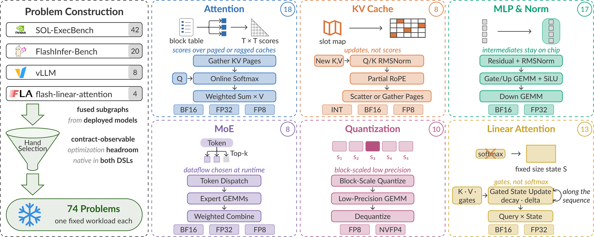
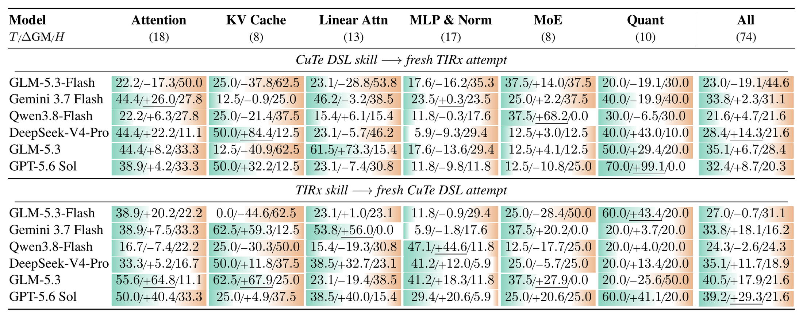
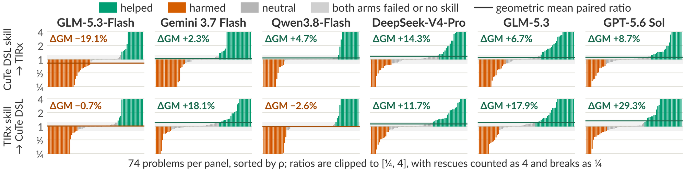
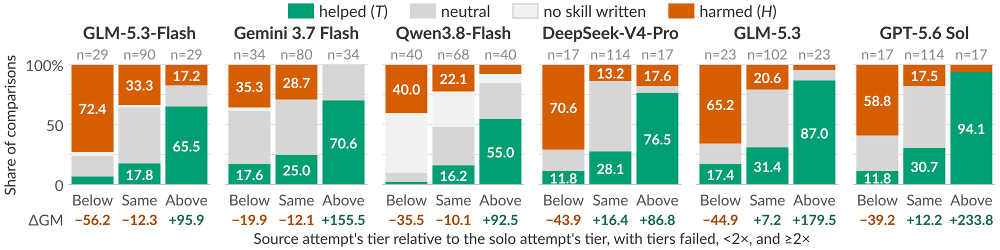
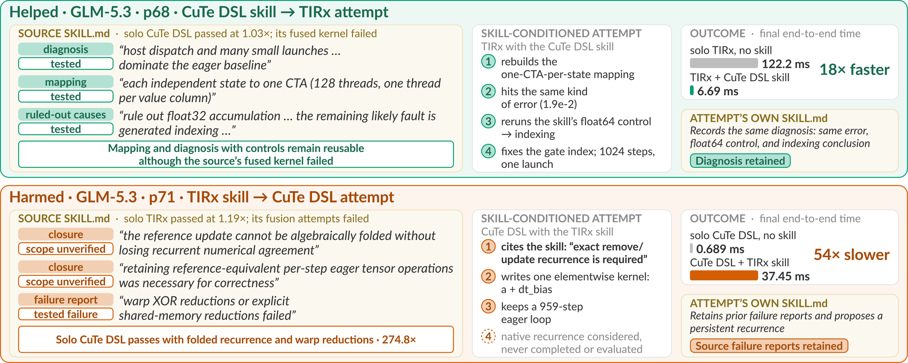

Recent GPU kernel optimization agents retain what they learn in knowledge bases or as distilled skills. Kernel benchmarks score each attempt's implementation for correctness and speed but leave the reuse value of retained experience unmeasured. We introduce MetaKernelBench, which measures whether experience distilled from an attempt in one kernel domain-specific language (DSL) improves a fresh attempt at the same problem in another. Its 74 problems are fused subgraphs in six families, each posed as a pair of CuTe DSL and TIRx variants that differ only in the DSL. The agent first attempts each variant solo and is instructed to distill what it learns into a natural-language skill, which is transferred whether or not the source attempt passes verification. The skill is the only extra input to a skill-conditioned attempt by the same model in the other DSL. We compare each skill-conditioned attempt with the solo attempt on the same variant under matched per-attempt budgets, scoring correctness and end-to-end runtime. Across six models and both directions, paired lift over solo attempts ranges from −19% to +29%. Four models gain in both directions, yet regressions occur on 16% to 45% of problems in every model and direction. Outcomes follow the source attempt's result relative to the target's solo attempt rather than source success alone, improving in 71% of comparisons when the source stands above and regressing in 54% when it stands below. MetaKernelBench complements implementation-quality metrics by measuring same-problem cross-DSL kernel knowledge transfer.

MetaKernelBench uses fused subgraphs traceable to production models, serving stacks, or published reference implementations. The 74-problem catalog includes 42 problems adapted from SOL-ExecBench and 20 from FlashInfer-Trace and FlashInfer-Bench. The catalog contains 8 cache-maintenance problems constructed from vLLM tests and kernels and 4 linear-attention problems authored from official model configurations and tests in flash-linear-attention. Each problem fixes a workload configuration and input distribution, selecting the largest admissible workload when multiple upstream records exist.


Skill conditioning yields paired lifts from −19.1% to +29.3% across six models and both directions in single-attempt outcomes. Gemini 3.7 Flash, DeepSeek-V4-Pro, GLM-5.3, and GPT-5.6 Sol gain in both directions, by 2.3% to 29.3%. Help and harm occur for every model and direction, at rates of 21.6% to 40.5% and 16.2% to 44.6%, respectively. Among the 277 helped comparisons, the reverse direction on the same model and problem is harmed in 41.5% and helped in 23.1%, with harm exceeding help for each of the six models.

Pooled over models and directions, 71.2% of comparisons are helped and 8.1% harmed with the source above, 25.7% and 21.8% at the same tier, and 10.6% and 53.8% with it below. Help rate follows this ordering in every model, with 55.0% to 94.1% helped when the source stands above and 35.3% to 72.4% harmed when it stands below. Skill-conditioned outcomes thus track the source attempt's standing rather than its verdict, so a passing source does not guarantee beneficial reuse and a failed source does not preclude it.

The p68 source skill records verification recipes and a bounded failure diagnosis, and the TIRx skill-conditioned attempt reuses the recorded thread mapping, reruns the recorded control, fixes the indexing fault the source had suspected, fuses the recurrence the source could not, and records the same diagnosis in its own skill. The p71 source skill records an unsupported closure that rules out folding the recurrence, and the CuTe DSL skill-conditioned attempt cites it, retains eager execution, and never completes the native recurrence that the solo attempt implements. These traces show skill uptake, but the runtime comparisons do not isolate its causal contribution.
@article{chen2026metakernelbench,
title = {MetaKernelBench: Measuring GPU Kernel Knowledge Transfer Beyond Code},
author = {Chen, Xueyi and Liu, Shiyu and Jin, Xin and Zheng, Yuhua and Li, Xin
and Bai, Haolei and Zhu, Junhan and Wang, Huan},
journal = {arXiv preprint arXiv:2610.05014},
year = {2026}
}